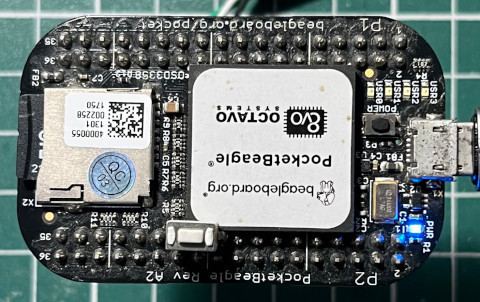
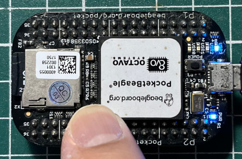

中斷本身是一種高優先權處理的機制，一旦硬體中斷觸發後，系統會馬上跳到使用者設定的Callback執行，在Callback中，不應該執行太過耗時的程式，否則將拖垮系統效能，這是由於Context Switch優先級一般會比中斷來得低，在中斷副程式尚未將權限交回給系統時，系統無法做Context Switch(單核心系統來說)，也就是其它程式將無法被系統執行，Context Switch是系統交換程式執行的意思
使用步驟：
1. gpio_to_irq() 2. request_irq() 3. free_irq()
request_irq()其實就是呼叫request_threaded_irq()，只是bottom-half傳入NULL
main.c
#include <linux/init.h>
#include <linux/device.h>
#include <linux/module.h>
#include <linux/delay.h>
#include <linux/kernel.h>
#include <linux/errno.h>
#include <linux/mm.h>
#include <linux/gpio.h>
#include <linux/interrupt.h>
MODULE_LICENSE("GPL");
MODULE_AUTHOR("Steward Fu");
MODULE_DESCRIPTION("Linux Driver");
#define BUTTON 27
static irqreturn_t irq_handler(int irq, void *arg)
{
printk("%s\n", __func__);
return IRQ_HANDLED;
}
int ldd_init(void)
{
request_irq(gpio_to_irq(BUTTON), irq_handler, IRQF_TRIGGER_RISING, "gpio_irq", NULL);
return 0;
}
void ldd_exit(void)
{
free_irq(gpio_to_irq(BUTTON), NULL);
}
module_init(ldd_init);
module_exit(ldd_exit);
ldd_init: 設定中斷並且使用上緣觸發方式(IRQF_TRIGGER_RISING)
irq_handler: 輸出中斷訊息
ldd_exit: 釋放中斷
完成


# irq_handler